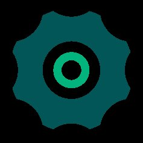
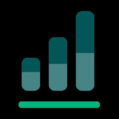
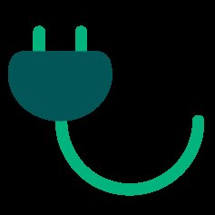
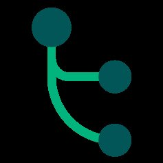
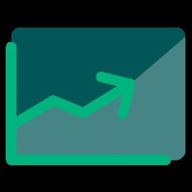
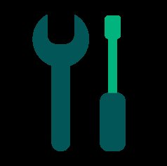
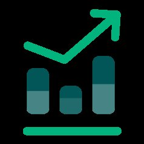
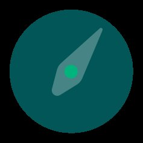

Découvrez notre programme de webinars
Des replays de 30 à 45 minutes, par thème : trésorerie, budget, consolidation, tableaux de bord, IA, RH.
Tous nos webinars, disponibles en replay
- IA & Finance : 7 cas pratiques de terrain et les règles d'or du CFO « AI‑Ready Une immersion dans le quotidien de directions financières qui ont réussi leur transformation. Nous avons condensé plusieurs mois de tests de nos experts EMASPHERE. Disponible en replayEn savoir plus

DAF : transformez vos reportings en un outil stratégique adapté à votre secteur L'objectif : transformer vos données en leviers de performance et de croissance, avec des solutions concrètes et immédiatement actionnables. Comment garantir aux DAF des reportings fiables et adaptés à chaque secteur ? Disponible en replayEn savoir plus- Suivez vos heures, vos revenus et vos projets en temps réel : le reporting pensé pour les sociétés de services et de conseil Les cabinets de conseil et les entreprises de services sont souvent confrontés à des données dispersées provenant de différents outils. Comment centraliser toutes ces données pour obtenir une vision claire de vos processus métiers ? Disponible en replayEn savoir plus
- Reporting opérationnel, financier et RH : simplifiez tout avec EMASPHERE ! Découvrez comment centraliser et analyser vos données financières et extra‑financières pour un reporting complet et une gestion optimisée de la performance de votre entreprise. Disponible en replayEn savoir plus

Les outils de reporting financier : du Plug & Play à la personnalisation Nous parcourons les différents outils de reporting financier et présentons la solution EMASPHERE. Disponible en replayEn savoir plus- Au‑delà du buzz, quel est le vrai impact de l'intelligence artificielle pour les CFOs ? Explorons ensemble l'évolution de l'IA et sa place dans le département financier. Disponible en replayEn savoir plus
- Pourquoi vous devriez envisager des alternatives à la visualisation des données dans Excel en 2024 Pourquoi Excel est un outil puissant mais pas optimal pour la structuration et la visualisation des données financières ? 72 % des directions financières souhaitent investir dans un outil d'automatisation du reporting. Disponible en replayEn savoir plus
- Les clés pour une gestion de trésorerie optimisée L'analyse des flux de trésorerie est au cœur des compétences financières : comment optimiser le suivi de la trésorerie et anticiper son évolution. Disponible en replayEn savoir plus

La connexion Exact/EMASPHERE à travers le témoignage de GTA Group Comment Olivier Gasche, conseil externe de GTA Group, passe aujourd'hui plus de temps sur l'analyse des données plutôt que sur la collecte d'informations ? Disponible en replayEn savoir plus- Automatisez vos processus financiers avec Inqom et EMASPHERE Découvrez en 45 min comment le logiciel de production comptable Inqom et la plateforme de reporting EMASPHERE peuvent vous aider à automatiser et centraliser vos flux comptables. Disponible en replayEn savoir plus
- De la comptabilité au reporting : automatisez vos processus avec Horus et EMASPHERE Un logiciel de comptabilité 100 % SaaS et une plateforme de reporting : découvrez comment Horus et EMASPHERE peuvent vous aider. Disponible en replayEn savoir plus

Comment optimiser les processus de consolidation de vos différentes entités ? Optimisez et rationalisez votre processus de consolidation pour que vos équipes financières se concentrent sur l'analyse et la prise de décision stratégique. Disponible en replayEn savoir plus
Les outils de BI : bonne ou mauvaise idée ? 72 % des directions financières souhaitent automatiser leur reporting. Quelles sont les solutions disponibles ? Entre BI et EPM, que choisir ? Disponible en replayEn savoir plus
Entreprise multi‑site : automatisez votre processus financier de la facture au reporting Yooz & EMASPHERE expliquent comment automatiser vos processus financiers et bénéficier d'une vue fiable et à jour de vos données. Disponible en replayEn savoir plus
Entre explosion des prix et crise énergétique : quand l'automatisation contribue à la stabilité de l'entreprise Avec l'augmentation du prix des matières premières, des coûts salariaux et de l'énergie, se montrer réactif est plus que jamais nécessaire. Disponible en replayEn savoir plus- Automatisez vos processus financiers… Qualifio témoigne ! Sam Boribon (Head of Finance de Qualifio) partage ses clés pour une bonne gestion financière et pourquoi il a fait le choix d'Exact et EMASPHERE. Disponible en replayEn savoir plus
- Gérer un réseau de +300 salons de coiffure : le cas Pascal Coste Marie‑Christine Condemi, responsable administrative et financière du Groupe Pascal Coste, partage comment un outil de pilotage aide l'entreprise dans sa stratégie d'acquisition. Disponible en replayEn savoir plus
- Start‑up / Scale‑up : pilotez votre hyper‑croissance ! 8 start‑up sur 10 échouent à cause d'un manque de liquidités. Les leviers pour piloter son entreprise et éviter la faillite. Disponible en replayEn savoir plus
- Produire un reporting consolidé pour 12 entités : le cas Groupemen Lionel Tondut (Groupemen) partage comment il a gagné du temps dans la production de son reporting consolidé et peut se consacrer au suivi de la trésorerie. Disponible en replayEn savoir plus

Budget 2022 : la méthode EMASPHERE Un processus annuel qui peut être fastidieux car il implique de nombreuses parties prenantes : la méthode EMASPHERE pour le budget. Disponible en replayEn savoir plus- Analysez et anticipez vos ventes grâce au reporting CRM ! EMASPHERE se connecte à votre CRM et automatise la création de tableaux de bord et prévisions basés sur les données de votre pipeline. Disponible en replayEn savoir plus
- Comment construire un tableau de bord ? Découvrez en 30 minutes nos 5 clés simples et rapides pour construire un tableau de bord efficace grâce à EMASPHERE. Disponible en replayEn savoir plus
- 5 conseils pour suivre ses données RH Obtenez une compréhension approfondie grâce à un bon outil de reporting RH pour faciliter la prise de décision. Disponible en replayEn savoir plus
Aucune ressource ne correspond.

Un webinar ne remplace pas une démonstration
Réservez une présentation personnalisée et sans engagement de notre solution.